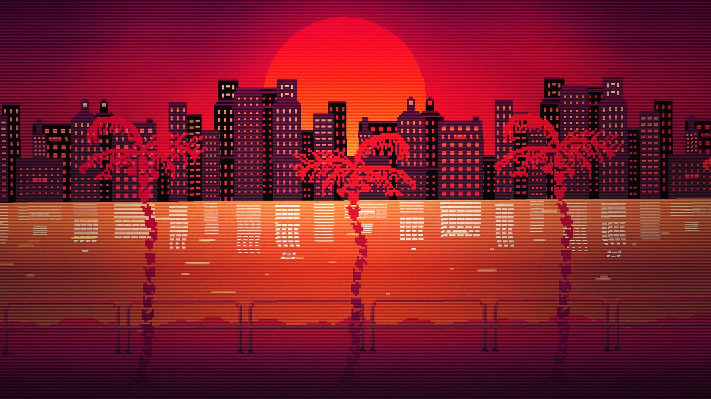
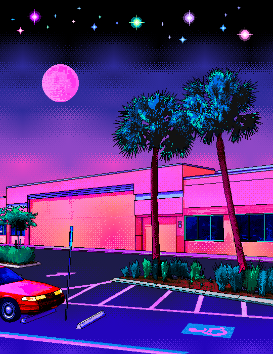
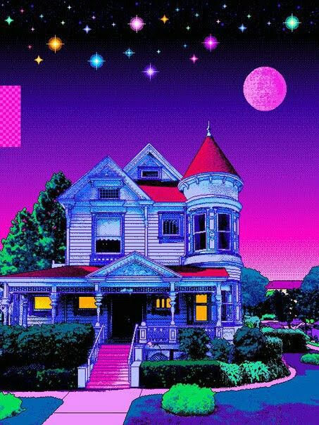
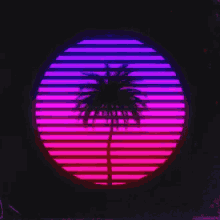

Esta es la página temática que va a mostrar las principales
caraterísticas y elementos que conforman al vaporwave como un estilo
de arte, música y sobre todo, una manifestación cultural.
Supongo que está aquí después de haber terminado de leer
toda la página de hobbies.
(Si no es así, descuide, el orden en que puede leer
las páginas no es importante ^^)




Canción utilizada: Voyager-Jasper Byrne from the album
Falling/Sunday Morning
Y para terminar, un video de los simpsons versión Hotline
Miami ^^